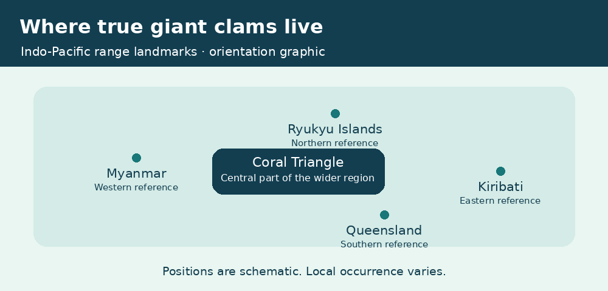
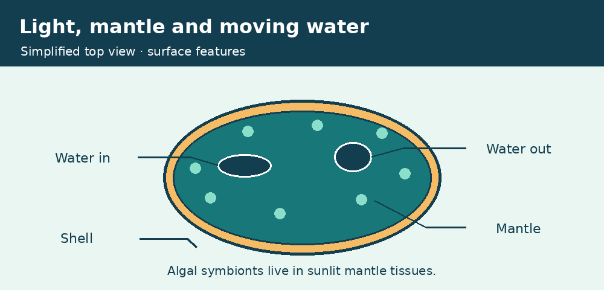

Giant Clam Basics
The true giant clam, Tridacna gigas, is the largest living bivalve. NOAA’s status review records a shell about 4½ feet long and specimens weighing more than 496 pounds, or about 225 kilograms. Some accounts put its lifespan at 100 years or more. The maximum age is uncertain. The oldest reliably aged specimen in NOAA’s review was 63 years old.
The Aquarium lists its Ocean in Motion giant clams as Tridacna sp. Check exhibit signage or ask staff to confirm the species of an individual clam.
Family and habitat
Giant clams are mollusks in the class Bivalvia, the cockle family Cardiidae and the subfamily Tridacninae. That subfamily contains two genera, Tridacna and Hippopus. Relatives include mussels, scallops and oysters.
T. gigas lives on shallow tropical Indo-Pacific reefs, including the Great Barrier Reef, and on hard reef surfaces or sand in lagoons. NOAA reports a typical depth of 6–65 feet for this species. Other Tridacna have different habits. The small boring clam, T. crocea, can embed its shell in reef limestone.

Ocean in Motion · What to look for
The shell has two hard, hinged halves. The mantle is the soft, often brightly patterned tissue that lines the shell and spreads into sunlight. Look for the broad intake opening and the smaller, raised outlet in the mantle.

From spawning to settlement
Giant clams mature first as sperm producers. Mature individuals can produce both sperm and eggs. Releasing sperm before eggs helps limit self-fertilization during broadcast spawning.
Fertilized eggs hatch into swimming trochophores, then develop into veligers. A pediveliger develops a foot that helps it explore the bottom. After settlement, the larva transforms into a juvenile clam. Timing varies with species and conditions.
The juvenile settles on the reef and generally stays in place. Many young giant clams anchor with byssal threads. As T. gigas grows, it loses that attachment and its heavy shell keeps it in place.

How It Survives
A giant clam gets food in two ways. It filters tiny drifting organisms and other food particles from seawater, and receives sugars and other nutrients from microscopic algae in its mantle.
Follow the water
Seawater enters through the intake siphon. The gills capture food particles, and water leaves through the outlet siphon.
Why sunlight matters
The clam gives the algae, often called zooxanthellae, shelter in fine tubes in its mantle. The algae use sunlight to make sugars through photosynthesis and share some of what they make. That partnership helps explain why giant clams are common on shallow, well-lit reefs.
Reflective cells called iridocytes spread usable light deeper into the mantle, where more algae can reach it.
How giant clams support a reef
Large clam shells provide surfaces and shelter for reef life, even after the clam dies. Shell growth bands can also preserve clues to past ocean conditions.
Some algae expelled by giant clams stay viable. In a lab study, coral larvae acquired algal symbionts from giant clam fecal pellets. Whether this helps adult bleached corals or speeds reef recovery in the wild remains open.
Conservation
Harvesting for meat and shells depleted wild populations. Marine heatwaves can cause bleaching through loss of symbiotic algae, and ocean acidification can stress developing clams as they build shells.
IUCN status by species
- Critically Endangered · T. gigas
- Endangered · T. derasa, T. mbalavuana and T. squamosina
- Least Concern · T. crocea, T. maxima, T. noae and T. squamosa
- Data Deficient · T. elongatissima and T. rosewateri
Aquaculture and protections
Hatcheries can supply cultured clams in place of wild collection and raise juveniles for restoration. Reef and harvest protections help safeguard remaining wild populations. CITES Appendix II regulates international trade. NOAA Fisheries has proposed listing T. gigas as endangered under the U.S. Endangered Species Act.
Sources
- Monterey Bay Aquarium · Giant clam
- NOAA Fisheries · True giant clam
- NOAA Fisheries · Giant clam status review
- Hiroshima University · Lifespan estimate
- National Geographic · The diver legend
- IUCN Red List · Tridacna gigas
- IUCN reassessment authors · Red List summary in Tentacle, no. 33, p. 12
- Giant clam behavior and development review
- Research on how mantle cells distribute light
- Coral larval uptake study
Amazing Facts & Visitor Talking Points
- “A clam as heavy as a piano.” The true giant clam is the world’s largest living bivalve and can weigh around 500 pounds.
- “Could this clam be older than your grandparents?” See the lifespan estimate.
- “That colorful part is alive.” Ask guests to point to the hard shell, the colorful mantle and the two openings.
- “A solar-powered partnership.” Ask what the tiny algae and the clam each get out of sharing a home.
Predators and the diver legend
Crabs, octopuses and predatory snails can eat juvenile giant clams. The old story of giant clams killing divers has no verified human death behind it.
Monterey Bay Connections
On tropical reefs, giant clams live beside corals in sunlit water. Monterey Bay has coral habitats too, including deep-water corals that can live without sunlight.
Ask guests: “What might find shelter among the branches of a coral or beside a giant clam’s shell?”